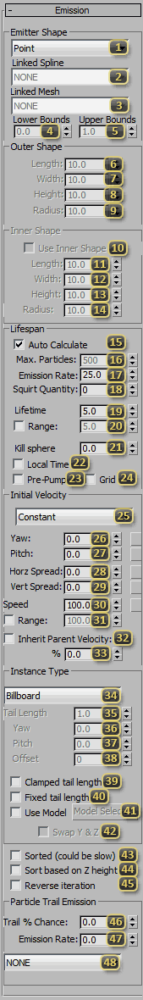
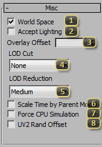
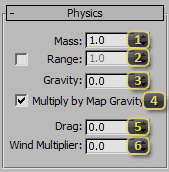
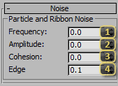
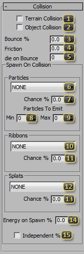
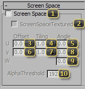

Node: Effect: Particle
The SC2Particle Node, found in the Particle Systems create panel, emits a system of renderable points, called 'particles', based on its properties. These particles simulate individually and are a fast way to create exciting visual effects. In StarCraft II, these are used for sparks, spells, explosions, muzzle flashes, weather, fires, and more.
Emission
The Emission rollout defines properties for the creation of every separate particle. Many of these values can be animated, and control initial individual particle properties, such as when and where to create particles, what directions they should be travelling, and a few parameters that control the look of the system as a whole.
Emitter Shape defines the physical location from which particles spawn. Distributions across the volume are not guaranteed to be even.
- Point spawns from exactly the SC2Particle node's position.
- Plane defines a flat square from which particles can be emitted, along the emitter's local XY-plane, and centered on the node.
- Sphere picks a point in the volume of a sphere around the node.
- Box uses a 3D box centered on the emitter node.
- Cylinder emits from a shape defined by a radius and height, centered on the emitter.
- Disc is a circle mounted to the emitter, oriented along the node's local XY-plane.
- Spline emits from along a spline picked in the Linked Spline dropdown.
- Mesh emits from the faces of the mesh picked in Linked Mesh dropdown. If Vertex Color is applied and exported by the material on the mesh, then the Red channel of vertex color regulates the probability that a face will be used for particle emission. Less red results in a lower probability. If no red is present on a face, no particles will be emitted from it.
Linked Spline is used for Spline emitter shapes. The exporter will attempt to convert any spline that can be reduced to a single Bezier Spline. Only valid splines will be listed here. (Specifically, the exporter will first try to convert to a SplineShape, and extract exactly 1 BezierSpline from it. Any node that can satisfy this condition should work.)
Linked Mesh is used for Mesh emitter shapes. It will only display meshes that will be exported. If a mesh has a material set to Export Vertex RGBA, then the intensity of the Vertex Color Red will be used to define the distribution of emission over the mesh.
Lower Bounds defines, for a Spline, what percentage along the spline it should start emitting from. This allows emitting from sub-sections of splines.
Upper Bounds defines, for a Spline, what percentage along the spline it should stop emitting from. This allows emitting from sub-sections of splines.
Length (Outer Shape) is the length dimension in generic max units for emitter shapes that require it, and generally correlates with the local Y-axis.
Width (Outer Shape) is the width dimension in generic max units for emitter shapes that require it, and generally correlates with the local X-axis.
Height (Outer Shape) is the height dimension in generic max units for emitter shapes that require it, and generally correlates with the local Z-axis.
Radius (Outer Shape) is the radius in generic max units for round emitter shapes, or when using a Spline.
Use Inner Shape Enables an interior shape, which hollows out the emitter, allowing emission from only a shell. Otherwise particles are emitted throughout the volume. The inner shape is always the same as the shape of the emitter.
Length (Inner Shape) is the length dimension in generic max units for emitter shapes that require it, and generally correlates with the local Y-axis.
Width (Inner Shape) is the width dimension in generic max units for emitter shapes that require it, and generally correlates with the local X-axis.
Height (Inner Shape) is the height dimension in generic max units for emitter shapes that require it, and generally correlates with the local Z-axis.
Radius (Inner Shape) is the radius in generic max units for round emitter shapes, or when using a Spline.
Auto Calculate forces the exporter to attempt to calculate the Max. Particles field based on the Emission Rate, the squirt quantity, and the Lifetime of the particles. For simple particle systems, this is almost always correct, but for complex animated parameters, this may need to be disabled.
Max. Particles is the upper bound for the number of particles a particle system can have. This is critical for performance, and a lower number is better. Note that particles that are currently alive are favored over creating new particles, and thus a number that is too small here may cause hitches in emission.
Emission Rate defines the number of particles per second that will spawn.
Squirt Quantity is a special keyframe triggered field for burst particle emission. When there is a keyframe that is non-zero, and differs in value from the previous keyframe, exactly that number of particles (subject to Graphics settings) will be created at that time. This is useful for explosions and other instantaneous effects.
Lifetime is the time, in seconds, that a particle will live for. Most effects in Per-particle Parameters are normalized across this lifetime.
Range (Lifetime) enables randomized lifetimes among particles, allowing for more variety in the look of the particle system. When enabled, the field is the maximum lifetime of a particle. It must always be larger than Lifetime.
Kill sphere, when non-zero, is a hard-stop distance that will instantly kill a particle when it exceeds this distance. This is measured from the SC2Particle node, and not the point of emission. Particles that spawn outside the sphere will be visible for exactly one frame.
Local Time toggles the particle system between simulating in real time or synced with the animation. If the particle system should simulate in "real-time" no matter what, this checkbox should remain unchecked. Check it if the particle system should adjust to match the animation speed.
Pre-pump simulates the particle system prior to its first appearance on screen, making it appear at full strength, rather than "filling up" the first time it appears. This is used to make a particle system look like it has been running already when first seen. Squirt will not be pre-pumped.
Grid is currently broken and not advised to be used.
Initial Velocity defines the direction particles should be traveling when emitted.
- Constant picks a direction based on the Yaw and Pitch settings.
- Radial always pushes away from the center of the emitter node.
- Z-axis picks randomly to move in the direction of the positive or negative local Z-Axis for the emitter.
- Random picks an entirely arbitrary orientation.
- Mesh Normal when using a Mesh Emitter Shape, uses the normal of the face being emitted from as the direction vector.
Yaw rotates emission along the SC2Particle node's local X-axis. ( The button to the right may be used to add procedural overlay noise to this field. )
Pitch rotates emission along the SC2Particle node's local Y-axis. ( The button to the right may be used to add procedural overlay noise to this field. )
Horz Spread gives a randomized range of angles from which particles can spawn. The axis of freedom corresponds to the axis of freedom for Pitch. ( The button to the right may be used to add procedural overlay noise to this field. )
Vert Spread gives a randomized range of angles from which particles can spawn. The axis of freedom corresponds to the axis of freedom for Yaw. ( The button to the right may be used to add procedural overlay noise to this field. )
Speed sets the magnitude of each particle's direction vector when it is emitted. ( The button to the right may be used to add procedural overlay noise to this field. )
Range (Speed) enables randomized speed among particles, allowing for more variety in the look of the particle system. When enabled, the field is the maximum speed of a particle. It must always be larger than Speed. ( This will disable procedural overlay noise on Speed. )
Inherit Parent Velocity makes each particle add the velocity of the model it is part of when it is emitted. This makes the system look like it is moving with the model as opposed to being dropped off in space.
% (Inherit Parent Velocity) denotes the percentage transfer of parent velocity to each emitted particle if Inherit Parent Velocity is turned on.
Instance Type controls the shape of particles in the particle system.
- Billboard will always be square to the camera.
- Tail will face the camera, but be elongated based on Tail Length and distance traveled.
- Facing Traveling Direction sets the particle's face normal to be the direction it travels. Up and Right vectors are derived from the emitter.
- World Facing Direction makes all particles face in a worldspace direction defined by Yaw (Instance Type) and Pitch (Instance Type).
- Single Axis particles will face the camera by rotating along only one axis, defined by Yaw (Instance Type) and Pitch (Instance Type).
- Ground Oriented will make a particle's default orientation match that of the heightmap below the particle. Particles can be spun with Pitch (Instance Type).
- Ground Direction Oriented matches the ground for facing direction, but leaves a trail similar to Tail in the XY plane. The orientation matches the direction the particle is traveling.
- Emitter Oriented will set each particle to face the same direction as the SC2Particle node's local Z-axis. This is most notable when Pitch and Yaw are used, causing divergence between the emission direction and the node's physical direction.
- Physics Normal Oriented will orient the particle in the direction of the surface it was generated off of if and only if it was generated as a result of terrain or object collision. For particles not generated in this manner, this will yield undefined results.
- Pinned will create a stretched quad for each particle. This quad will face the camera and its end points will be the initial position of the particle, and the current position of the particle.
Tail Length defines the ratio of Size to the length of a particle tail.
Yaw (Instance Type) controls the shape of particles in the particle system.
Pitch (Instance Type) controls the shape of particles in the particle system.
Offset expands the leading edge of a Pinned particle. The width of the leading edge is Size * ( 1 + Offset ).
Clamped Tail Length makes tail-type particles start with zero length and max out at their Tail Length. ( Behavior is undefined with Pinned Particle Systems )
Fixed Tail Length forces a particle tail to start, and remain, at its Length for the duration of the particle lifetime. When unchecked, physical particle tail length is Velocity * Size * Length / 100.
Use Model allows the user to pick a Group in the same file to be replicated for every particle. When enabled, the button enters model selection mode.
Swap Y & Z changes the forward vector of the model selected in Use Model.
Sorted (could be slow) will force particle to sort themselves based on depth, so that the closest to the camera draws "in front". Normally, particles will be traversed in their order in memory. Which would favor putting particles emitted first "behind" the others visually, but will have occasional sorting artifacts. If the SC2 Standard Material assigned to a particle system has a Blend Mode of Add, this flag does nothing except make the particle system more expensive to calculate.
Sort based on Z height forces sorting to be done based on the height along the Z-axis, rather than distance to the camera. This is particularly useful for Ground oriented particles, where they may visually intersect incorrectly otherwise.
Reverse iteration makes the renderer traverse the particle system back to front. Visually this inverts the sorting order of the particles. Without the Sorted checked, particles emitted first will generally appear "in front" of others. With Sorted, the furthest away will appear "in front".
Trail % Chance sets the percentage of particles emitted that can generate trailing particles. Whether or not a child will generate children is decided at the time of emission, and it will keep this property throughout its lifetime.
Emission Rate defines at what rate the child particles will be spawned. Note that this ignores the child particle system's Emission properties, but respects Max. Particles.
Picker (Particle Trail Emission) allows the user to select a child particle system for use with emission trails. Properties pertaining to Emission, Speed and Shape are ignored.
Per-particle Parameters
Per-element parameters are unique for every particle emitted. They generally define properties that change over the lifetime of a particle, and are useful for changing the look and feel of the particle system.

Start (Color) defines the color of a particle when it first spawns. It will interpolate from this value to either of the subsequent values, if they are enabled.
Mid (Color), if enabled, defines the color of a particle during the middle of its lifetime. It is exactly this value at Mid Time.
End (Color), if enabled, defines the color of the particle as it approaches its terminus.
Start (Color Range) defines the color of a particle when it first spawns. When the Range checkbox is enabled, particles will be assigned a color randomly linearly interpolated between this value and that of Start (Color). It will interpolate from this value to either of the subsequent values, if they are enabled.
Mid (Color Range), if enabled, defines the color of the particle during the middle of its lifetime. When the Range checkbox is enabled, particles will be assigned a color randomly linearly interpolated between this value and that of Mid (Color). It is exactly this value at Mid Time.
End (Color Range), if enabled, defines the color of the particle as it approaches its terminus. When the Range checkbox is enabled, particles will be assigned a color randomly linearly interpolated between this value and that of End (Color).
Mid Time (Color) is the percentage of the particle's lifetime that it should strike the Mid value. The Shared button to the right, if depressed, will keep this value in sync with all other Mid Time values in this particle system that have the Shared button depressed.
Hold Time (Color) is the size of the plateau for Mid to be active, if Smoothing is set to a value with "Hold" in its name.
Smoothing (Color & Alpha) picks one the interpolation methods between the start, mid, and end colors. Alpha interpolates using this same method.
Start (Alpha) defines the opacity (from 0-255) of each particle when it first spawns. It will interpolate from this value to either of the subsequent values, if they are enabled.
Mid (Alpha), if enabled, defines the opacity (from 0-255) of each particle during the middle of its lifetime. It is exactly this value at Mid Time.
End (Alpha), if enabled, defines the opacity (from 0-255) of each particle as it approaches its terminus.
Start (Alpha Range) defines the opacity (from 0-255) of each particle when it first spawns. When the Range checkbox is enabled, particles will be randomly assigned a value between this value and that of Start (Alpha). It will interpolate from this value to either of the subsequent values, if they are enabled.
Mid (Alpha Range), if enabled, defines the opacity (from 0-255) of each particle during the middle of its lifetime. When the Range checkbox is enabled, particles will be randomly assigned a value between this value and that of Mid (Alpha). It is exactly this value at Mid Time.
End (Alpha Range), if enabled, defines the opacity (from 0-255) of each particle as it approaches its terminus. When the Range checkbox is enabled, particles will be randomly assigned a value between this value and that of End (Alpha).
Mid Time (Alpha) is the percentage of the particle's lifetime that it should strike the Mid value. The Shared button to the right, if depressed, will keep this value in sync with all other Mid Time values in this particle system that have the Shared button depressed.
Hold Time (Alpha) is the size of the plateau for Mid to be active, if Smoothing is set to a value with "Hold" in its name.
Start (Size) defines the width of a particle when it first spawns. It will interpolate from this value to either of the subsequent values, if they are enabled.
Mid (Size), if enabled, defines the width of a particle during the middle of its lifetime. It is exactly this value at Mid Time.
End (Size), if enabled, defines the width of a particle as it approaches its terminus.
Start (Size Range) defines the width of a particle when it first spawns. When the Range checkbox is enabled, particles will be randomly assigned a value between this value and that of Start (Size). It will interpolate from this value to either of the subsequent values, if they are enabled.
Mid (Size Range), if enabled, defines the width of a particle during the middle of its lifetime. When the Range checkbox is enabled, particles will be randomly assigned a value between this value and that of Mid (Size). It is exactly this value at Mid Time.
End (Size Range), if enabled, defines the width of a particle as it approaches its terminus. When the Range checkbox is enabled, particles will be randomly assigned a value between this value and that of End (Size).
Mid Time (Size) is the percentage of the particle's lifetime that it should strike the Mid value. The Shared button to the right, if depressed, will keep this value in sync with all other Mid Time values in this particle system that have the Shared button depressed.
Hold Time (Size) is the size of the plateau for Mid to be active, if Smoothing (Size) is set to a value with "Hold" in its name.
Smoothing picks one the interpolation methods between the start, mid, and end sizes.
Start (Rotation) defines, in degrees, the absolute rotation of a particle about the axis of its normal, when it spawns.
Mid (Rotation), if enabled, defines, in degrees, the middle rotation value of a particle. If Relative Mid End is enabled, this value is an offset from the current rotation. If Relative Mid End is disabled, this is a target absolute rotation that the particle will rotate to. This value will be fully applied exactly at Mid Time (Rotation).
End (Rotation), if enabled, defines, in degrees, the final rotation value of a particle. If Relative Mid End is enabled, this value is an offset from the current rotation. If Relative Mid End is disabled, this is a target absolute rotation that the particle will rotate to. This value will be fully applied as the particle reaches its terminus.
Relative Mid End toggles the values of Mid (Rotation), End (Rotation), Mid (Rotation Range), and End (Rotation Range) between being relative offsets from the current rotation, and absolute rotations.
Start (Rotation Range) defines, in degrees, the absolute rotation of a particle about the axis of its normal, when it spawns. When the Range checkbox is enabled, particles will be randomly assigned a value between this value and that of Start (Rotation).
Mid (Rotation Range), if enabled, defines, in degrees, the middle rotation value of a particle. If Relative Mid End is enabled, this value is an offset from the current rotation. If Relative Mid End is disabled, this is a target absolute rotation that the particle will rotate to. When the Range checkbox is enabled, particles will be randomly assigned a value between this value and that of Mid (Rotation). This value will be fully applied exactly at Mid Time (Rotation).
End (Rotation Range), if enabled, defines, in degrees, the final rotation value of a particle. If Relative Mid End is enabled, this value is an offset from the current rotation. If Relative Mid End is disabled, this is a target absolute rotation that the particle will rotate to. When the Range checkbox is enabled, particles will be randomly assigned a value between this value and that of End (Rotation). This value will be fully applied as the particle reaches its terminus.
Mid Time (Rotation) is the percentage of each particle's lifetime that it should strike the Mid value. The Shared button to the right, if depressed, will keep this value in sync with all other Mid Time values in this particle system that have the Shared button depressed.
Hold Time (Rotation) is the size of the plateau for Mid to be active, if Smoothing (Rotation) is set to a value with "Hold" in its name.
Smoothing picks one the interpolation methods between the start, mid, and end rotations.
Rows (Flipbook) defines the number of rows in a texture atlas used as an animation. This must be paired with the Use Particle Flipbooks property on an SC2 Bitmap, and allows for animation of individual particles.
Columns (Flipbook) defines the number of columns in a texture atlas used as an animation. This must be paired with the Use Particle Flipbooks property on an SC2 Bitmap, and allows for animation of individual particles.
Start (Flipbook) defines the first frame of a particle flipbook animation. This is 1-based, and begins counting from the top left and proceeds right across a row before moving down a column to the next row.
Mid (Flipbook), if enabled, defines the active frame of a particle flipbook animation at Mid Time. This is 1-based, and begins counting from the top left and proceeds right across a row before moving down a column to the next row. It is exactly this value at Mid Time. Backwards traversal is allowed.
End (Flipbook), if enabled, defines the active frame of a particle flipbook animation as it approaches its terminus.
Mid Time (Flipbook) is the percentage of the particle's lifetime that it should strike the Mid value. The Shared button to the right, if depressed, will keep this value in sync with all other Mid Time values in this particle system that have the Shared button depressed.
Random Flipbook Start sets the flipbook to start on an arbitrary frame. The length of animation calculated from Start (Flipbook) to End (Flipbook) will still be used to figure out how many frames to step forward over the Lifetime of the particle.
Misc
Misc values are scattered in use-case.
World Space makes the particles simulate in world-space, rather than local space. If simulating in world-space, only the emitter rotates with the parent model. Every already emitted particle continues simulating in world space. If simulating in local-space, the entire particle system will rotate when a model rotates. Similarly, gravity is also applied along the local Z-axis.
Accept Lighting *unused* This is a stub from shared particle UI.
Overlay Offset adjusts the phase for the procedural overlay noise. If the noise for two particle systems is too synchronized, adjusting this value can make them look more natural.
'LOD Cut' denotes which graphical setting level the particle system will no longer be displayed at. If critical for gameplay, leaving this at 'None' is prudent. Otherwise, it is useful for performance scaling.
'LOD Reduction' denotes which graphical setting at which the particle system will start emitting fewer segments. For each setting-level the user is at below this setting, 25% of the segments will be culled to preserve performance.
Scale Time by Parent Model determines whether or not the particle system should simulate faster or slower when the model is told to play an animation faster or slower. If this checkbox is off, the particle system will simulate in real-time seconds instead of game seconds.
Force CPU Simulation makes the particle system use a CPU reference implementation. Element systems such as particles are optimized to run on the GPU, but sometimes exhibit artifacts. CPU Simulation should be the most accurate simulation possible.
UV2 Rand Offset will randomly offset Explicit UV Channel 2 for any SC2 Bitmap used in a material assigned to this particle system on a per-particle basis. By using a generic, tiling texture with this property, more visual variety can be achieved with minimal computational expense.
Physics
Every particle in a particle system simulates independently, and follow a basic physical model. These properties control the inputs into that simulation, and are uniform across all elements in the particle at a given frame.
Mass defines the mass for each element in force evaluation. This is used for both drag and the influence each particle by SC2Force nodes.
Range (Mass) sets an upper bound for masses that particles can randomly start with. This randomizes separately from any other field, and is not paired with Size
Gravity is the acceleration along the Up-Vector for any given element.
Multiply by map gravity tells the particle system to factor in the gravity in the map for its calculations. If it is important for a particle system to look exactly one way, leave this off. If it is preferred that the particle system looks like it has mass and integrates into the environment, this should be on.
Drag slows down the particle's movement through air. It is multiplied by the velocity to yield the force that slows down the particle.
Wind Multiplier tells the particle system to factor in map wind for simulation. This allows particles to be pushed around ambiently.
Noise
Noise is a post-simulation change to the appearance of a particle system. It is used to add seemingly random variation to particle system, while still allowing the user to operate on simple, editable, and understandable values for the rest of the system.
Frequency regulates the rate of change in the noise pattern. Higher values will have more varied noise, while lower values will induce less change over the course of the system.
Amplitude scales the effect of noise on the system. The higher the number, the further from an element's original point it can be pushed. Note that noise is applied after tangents are generated, and therefore, high amplitudes can potentially create skewed lighting results.
Cohesion alters the speed at which the offset values travel through the noise field. A value of 0 will have static noise, while higher values will animate the noise more and more quickly.
Edge mutes the noise closer to the emitter. A value of 0, will have points being pushed immediately after being emitted, while a value of .5 will make points not receive the full amplitude of the noise until through the particle's lifetime.
Collision
The collision rollout regulates collision response for particles in the particle system. While particles will perform a physical simulation no matter what, collision is an expensive operation that must be opted in to.
Terrain Collision enables all collision calculations for particles. By default, particles will collide only with the height map. This is potentially costly in performance.
Object Collision upgrades particle collisions to react to rigid bodies such as debris. This greatly increases the expense of the element system.
Bounce % defines with what percentage of the particle's velocity (normal to the colliding surface) it should preserve when recoiling from a surface when it collides. 100% is perfectly elastic. 0% makes it stick to the surface.
Friction defines with what percentage of the particle's velocity (tangent to the surface) it should retain when striking a surface. 0% is completely frictionless, as if sliding along ice. 100% will cause the element to stick.
Die on Bounce sets, when non-zero, the number of collisions an individual particle can sustain before being culled.
Particles (Spawn On Collision) selects an SC2Particle that contains the definition for particles to spawn when a particle from this particle system encounters a collision event. Note that this ignores the child particle system's Emission properties, but respects Max. Particles.
Chance % (Particles On Collision) is the percentage of collisions that will cause a particle to die and spawn particles defined in Particles (Spawn On Collision) in its place.
Min (Particles To Emit) the minimum number of particles a Spawn On Collision event will generate to replace the particle lost in the collision.
Max (Particles To Emit) the maximum number of particles a Spawn On Collision event will generate to replace the particle lost in the collision.
Ribbons (Spawn On Collision) *unused* This field will never be populated.
Chance % (Ribbons On Collision) *unused* without Ribbons (Spawn On Collision) this field has no use.
Splats (Spawn On Collision) selects an SC2Projector that contains the definition for a splat to spawn when a particle from this particle system encounters a collision event.
Chance % (Splats On Collision) is the percentage of collisions that will cause a particle to die and spawn particles defined in Splats (Spawn On Collision) in its place.
Energy on Spawn % multiplies spawned particle system's speed by this percentage.
Independent % *unused*.
Forcefield Selection
The Forcefield rollout is used to govern the interaction between SC2Force nodes and particles. These alter the look of the particle system by pushing it around and making it react to the world around it.

Local Channels lists the mask for particle/force interaction. Elements from this system will interact only with SC2Force nodes that have at least one of the same channels enabled.
World Profile is a dropdown contain common sets of World Channels, to quickly choose common profiles. This is more useful from the perspective of the force, rather than the receiver.
World Channels behave like Local Channels but across multiple objects. For example, smoke wafting in the wind would be enlisted in the Wind channel, and a nuclear explosion would use the Wind channel as well. The result is that the explosion would push around the smoke. If they were not both in wind, the smoke would remain stationary. This is for both artistic reasons and performance. Common usage of the channels can be seen in the World Profile drop down.
Screen Space
The Screen Space rollout enables a special feature of particles that allows them to accumulate in an off-screen buffer and be recomposited with special settings. This is useful for simulating the look of goopy substances and fluids, but requires very specific settings. If this feature is enabled, you will want to use a material that is set to Mask with Add as its blend mode. Otherwise the offscreen buffer will not accumulate properly.
Screen Space enables using an offscreen buffer for this particle system.
ScreenSpace Textured enables the Diffuse map to be drawn over the particle system during the final composite. This forces an extra fullscreen pass and because of the performance implications of that, should only be used in special situations. An SC2 Bitmap must be used in the Diffuse slot. SC2 Color texmaps will not work.
Offset U moves the texture coordinates of a screenspace texture horizontally.
Tiling U scales the UV coordinates horizontally for a screenspace texture.
Angle U rotates a screenspace texture along the U axis. Note: the axis for this rotation is at .5 W in UVW space.
Offset V moves the texture coordinates of a screenspace texture vertically.
Tiling V scales the UV coordinates vertically for a screenspace texture.
Angle V rotates a screenspace texture along the V axis. Note: the axis for this rotation is at .5 W in UVW space.
Angle W rotates a screenspace texture along the W axis. Note: the axis for this rotation is at .5 U and .5 V in UVW space.
Alpha Threshold allows for a separate compositing threshold for a ScreenSpace Textured particle system. This is hard-coded to 128 for performance reasons, when not specifically enabled. All pixels with alpha values below this threshold will be ignored, and all values greater will be drawn to the framebuffer.